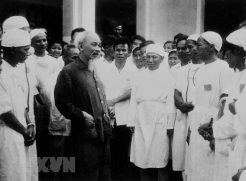

3 Lời Dạy Cốt Lõi Của Bác Với Ngành Y Tế
1. Thật Thà Đoàn Kết
Đoàn kết giữa cán bộ cũ và cán bộ mới. Đoàn kết giữa tất cả những người trong ngành y tế, từ thầy thuốc, y sĩ, điều dưỡng cho đến nhân viên phục vụ.
2. Thương Yêu Người Bệnh
Người bệnh giao tin cậy tính mạng của họ cho ta. Cán bộ y tế cần phải thương yêu, chăm sóc người bệnh như anh em ruột thịt của mình, coi họ đau đớn như mình đau đớn.
3. Xây Dựng Y Học Nước Nhà
Xây dựng một nền y học dựa trên nguyên tắc: Khoa học, Dân tộc và Đại chúng. Tích cực kết hợp Đông y và Tây y để phục vụ nhân dân hiệu quả nhất.
Thư Viện & Khai Thác Tư Liệu Số
Tra cứu các văn kiện, sách nói, tài liệu chuyên đề và tác phẩm của Chủ tịch Hồ Chí Minh dễ dàng trên mọi thiết bị.
Thư Bác Hồ Gửi Cán Bộ Y Tế
Toàn văn bức thư lịch sử ngày 27/02/1955 đúc kết kim chỉ nam cho ngành y tế Việt Nam.
Tác Phẩm "Đường Kách Mệnh"
Bộ tài liệu số hóa tác phẩm kinh điển về rèn luyện đạo đức cách mạng và tư tưởng Hồ Chí Minh.
Phim Tư Liệu Y Đức
Tuyển tập các hình ảnh, thước phim tư liệu về Bác Hồ thăm các bệnh viện, trạm y tế.
Audio Sách Nói Lời Bác
Nghe các câu chuyện kể về tư tưởng, phong cách làm việc giản dị, sâu sắc của Bác.
Hình Ảnh Bác Hồ Với Ngành Y Tế
Những khoảnh khắc lịch sử vô giá về sự quan tâm của Chủ tịch Hồ Chí Minh đối với công tác chăm sóc sức khỏe nhân dân.
Chủ tịch Hồ Chí Minh với Bộ trưởng Bộ Y tế Phạm Ngọc Thạch, Giáo sư, bác sĩ Trần Hữu Tước.
(Ảnh: Tư liệu/TTXVN)

Tư liệu lịch sửChủ tịch Hồ Chí Minh thăm Bệnh viện thành phố Nam Định (ngày 22/5/1963).
(Ảnh: Tư liệu/TTXVN)
Bác Hồ nói chuyện thân mật với giáo sư, bác sĩ Trần Hữu Tước (bên trái) và các trí thức ngành Y (tháng 3/1964).
(Ảnh: Tư liệu/TTXVN)
Thăm Bệnh xá Vân Đình (Hà Tây cũ) ngày 20/4/1963
(Ảnh: Tư liệu/TTXVN)
Chủ tịch Hồ Chí Minh thăm Viện Mắt Trung ương.
(Ảnh: Tư liệu/TTXVN)
Bác Hồ với các bác sĩ ngành Quân y (năm 1954).
(Ảnh: Tư liệu/TTXVN)
Phong Trào Thực Hiện Tại Trạm Y Tế Phường Tân Thới Hiệp
Đưa tư tưởng Hồ Chí Minh vào công tác chuyên môn hằng ngày tại đơn vị.
Đón tiếp chu đáo, hướng dẫn tận tình, giảm thiểu thời gian chờ đợi của người dân khi đến khám chữa bệnh và tiêm chủng.
Số hóa hồ sơ sức khỏe toàn dân, triển khai khám chữa bệnh BHYT bằng Căn cước công dân gắn chip và ứng dụng VNeID.
Tích cực truyền thông phòng chống dịch bệnh, chăm sóc sức khỏe người cao tuổi và các đối tượng chính sách trên địa bàn phường.